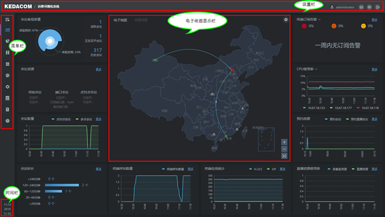
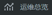

登录系统后进入主页面，如下图所示：

1. 菜单栏
菜单栏以简易图例展示，点击，菜单栏展开，以图+文字的形式展示，如；点击，菜单栏收缩，以图来显示，如；点击运维总览图标，回到主页面。
2. 电子地图
电子地图显示栏实时展现机房、终端、外设服务器的状态以及拓扑关系。
3. 设置栏
系统的一些基础设置，例：查看帮助信息，软件信息等。
4. 时间栏
显示服务器的年月日以及当前的北京时间。
5. 其它
未标示的地方，显示会议资源、会议数量、订阅告警等等一些信息。点击该问题信息，可直接跳转至对应的页面。